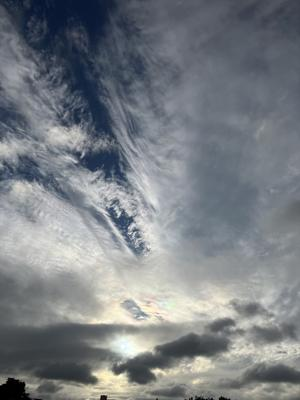
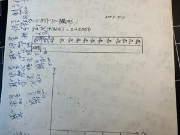
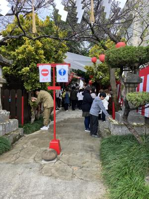

うるがいの話 ある日
最新: 令和８年の初夢【うるがいの話 ある日】とは 一日だけのプログです
『うるがいの話』の最新一日だけのプログで、通信料が少なく経済的だ。カニの画像をクリックすると全ての日付が載る『うるがいの話』サイトを表示します
|
|
【うるがいの話】 うるがい(ｳﾙｶﾞｲ urugai)とは、『もずくがに』の名前でとても大きくなります。 |
|---|---|
|
|
【カミマヤーの話】 猫のことを方言でマヤーといいます。カミマヤー（kamimayaa）とは、神の猫のことです。 |
|
【たながぁの音楽】 たながぁ（ﾀﾅｶﾞｰ tanagaa）とは手長えびのことで、何種類かあり大きいのは車 エビぐらいになります。 |

|
【ぶながぁの話】 ぶながぁ(ﾌﾞﾅｶﾞｰ bunagaa)とは、赤い髪の毛、赤い身体、そして身長は１ｍ２０ｃｍ ぐらい、川の蟹を食べているの目撃された。場所は沖縄県国頭郡大宜味村のと ある村僕の隣近所に住んでいる爺さんから、聞いた話です。 |
|
|
【ギーマの話】 ギーマ(giima)とは、山原の里山に咲くスズランに似た、 花を付けます。実は食べられます、 気が付くと口の周りが紫になっています。 |
2026年01月01日 (木）令和８年の初夢
15:39

私は何の学科の先生でしょうかと、学生に尋ねる。そして、名護
へいくバスに乗るため、とても巨大な（５０メートル以上もある
屋根付きの）建物にエレベーターで上がっていく、遠くの海には
積乱雲から、にわか雨が海に降っていた。
令和８年の初夢です、近ごろサインコサインがある裏紙に台湾華
語の書き込みをしているためか、はたまた、『初学の編集者がわ
かるまで書き直した基礎から鍛える量子力学 松浦壮／著』にあ
る数式をみているためなのか・・・・。この本のため、また『も
う一度高校数学』を学習すべと考える。

識名宮では大晦日のお祓いの儀式をしていた。

令和８年１月１日７時１０分の朝、雨だった

よく降る雨だ、一日中あめだ。でも、傘をさしてウォーキングは
するつもり。